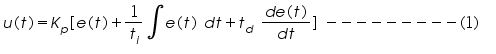
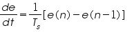
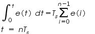
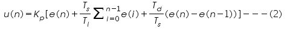
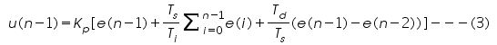
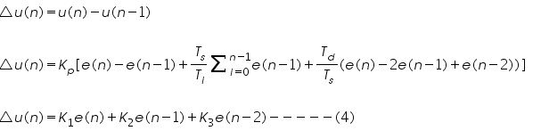

Aim:-
Design and implementation of PID controller architecture using FPGA.
Pre-Requisites:-
Before performing the experiment the user should know:
1. Basics of PID controller
2. PID algorithms
Objectives:-
Students will learn:
1. Discrete PID Implementation on FPGA
2. Effect of sample time on performance of PID


Theory
Introduction:
The objective of a control system design is to make a physical system behave in a useful fashion, causing its output to track a desire reference input even in the presence of noise, modeling error and disturbances. In the control system, one of the main components is the controller, which generates the appropriate control signal for the physical system to regulate the system performance. The Proportional- Integral-Derivative (PID) controller is one of the most common types of feedback controllers that are used in dynamic systems. It is used in the wide variety of control systems due its simple structure and robust performance. This is possible to have a PI, PD, PID or just a P control. It is very rare to have a ID control.
Proportional + Integral + Derivative (PID) controller:
The basic structure of conventional feedback control systems is shown in Figure below. The purpose of control is to make the process variable y follow the set-point value r. To achieve this purpose, the manipulated variable u is changed at the command of the controller. The “disturbance” is any factor, other than the manipulated variable, that influences the process variable. The error e is defined by e = r – y. The compensator C(s) is the computational rule that determines the manipulated variable u based on its input data, which is the error e in the case of Figure. The last thing to notice about the Figure is that the process variable y is assumed to be measured by the detector, which is not shown explicitly here, with sufficient accuracy instantaneously that the input to the controller can be regarded as being exactly equal to y.
When used in this manner, the three element of PID produces outputs with the following nature:
P element: proportional to the error at the instant t, this is the “present” error.
I element: proportional to the integral of the error up to the instant t, which can be interpreted as the accumulation of the “past” error.
D element: proportional to the derivative of the error at the instant t, which can be interpreted as the prediction of the “future” error.
Thus, the PID controller can be understood as a controller that takes the present, the past, and the future of the error into consideration. The general transfer function of the PID controller looks like the following:
where, Kp, Ki and Kd are the proportional, integral and derivative gains respectively. The values of these gains are decided using any standard rule or tuning methods.
Tuning methods of PID controller:
1.Ziegler-Nichols Open-loop
2.Coon-Cohen Open-loop
3.Ziegler-Nichols Closed-loop
4.Lambda Tuning
5.Visual Loop Tuning
6.Auto-tuning
Ziegler-Nichols Open-loop
The values of critical gain Kcr and corresponding time period Pcr are determined experimentally or can be calculated using bode plot. Kp, Ti and Td are obtained as given in Table below,
Controller
Kp
Ti
Td
P
0.5 Pcr
-
-
PI
0.45 Pcr
0.833 Pcr
-
PID
0.6 Pcr
0.5 Pcr
0.125 Pcr
How do the PID parameters affect system dynamics?
The effects of increasing each of the controller parametersKp, Ki and Kd and can be summarized as
Response
Rise Time
Overshoot
Settling Time
S-S Error
Kp
Decrease
Increase
NT
Decrease
Ki
Decrease
Increase
Increase
Eliminate
Kd
NT
Decrease
Decrease
NT
Applications of PID:
1.Aerospace
2.Process Control
3.Manufacturing
4.Robotics
5.Automation and
6.Transpiration system
Digital PID Controller:
Today, digital controllers are being used in many large and small-scale control systems, replacing the analog controllers. It is now a common practice to implement PID controllers in its digital version, which means that they operate in discrete time domain and deal with analog signals quantized in a limited number of levels. The trend toward digital rather than analog control is mainly due to the availability of low-cost digital computers. A digital version of the PID controller is shown in following Figure;
Fig. Block Diagram of Digital PID Controller
In its digital version, the integral becomes a sum and the differential a difference. The continuous time signal e(t) is sampled in fixed time intervals equals a determined sample period, here called Tc. An A/D (analog to digital) converter interfaces the input and a D/A (digital to analog) converter interfaces the output. This sampled and digitalized input, called e, exists only in time instants t = kTc. The digital PID controller equation can be written in two ways, the position form and velocity form.
Position Algorithm:
Consider controller output for a continuous-type PID controller

The above equation can be discretised at small sampling interval Ts
Taking the first order derivative,

and using rectangular integration, we can approximate as:

Now replacing the derivative and integral terms in equation (1), we get

But the major problem here is that the error values at all the time instants are to be stored.
Velocity Algorithm:
Consider the equation (2), we can write error signal at the (n-1)th instant as below;

Subtracting equation (3) from (2)

FPGA Implementation PID Algorithm:
For the implementation purpose we used position form of digital PID.
Steps to implement PID algorithm on FPGA.
Step1: Transfer function of a system to be control, convert it to state space form (A, B, C and D)
Step2: Initialization of states (x), inputs (u), output (y), reference (set-point) and P, I, D gains
Step3: Using Runge-Kutta method find value of x1
Step4: Calculate value of y1
Step5: Give calculated error (e1) to FPGA as input
Step6: Find value of u1 using customize IP cores (fixed or floating point) like ADD, SUB,
MUL, INV (as described in previous experiments)
Step7: Give calculated value of u1 to Step3.
Design Methodology:
The PID algorithm on FPGA can be implemented using serial and parallel architecture to reduce the sample time of PID. Computational units involved in PID algorithm
Arithmetic Operations / Storage Unit
Number of operations / Units
Addition
3
Subtraction
1
Multiplication
3
Resistor
1
Total
8
Serial Architecture
Do each step serially as given in algorithm
Parallel Architecture
Fig. Parallel Architecture of PID
Fig. Five Pipeline Architecture of PID


Steps to perform experiment:
1.Start simulator by clicking on the Simulation tab.
2.Click on the link to enter the simulator.
3.Login to your virtual Lab account.
4.First of all select a device from Device tab.(e.g. Device->Spartan 3E)
5.Then select an Experiment to perform from list.
6.After filling the necessary fields click on Submit button.
7.Here you will get answer to verify answer from simulator.
8.Now click on Generate Verilog Code button to generate the code.
9.Load the generated program by clicking on Load Program tab.
10Enter the file name without extension.
11.Click on Save On Server button to save program on your workspace at server.
12.Now click on Compile tab to compile your code on server.
13.After successful compilation, click on ok to generate the test bench.
14.Click on checkbox to select as output registers and select its type as output from list.
15.Enter data width (MSB=7 and LSB=0 for 8-bit output register).
16.Click on Submit button.
17.Click on Submit Test Bench button to submit your test bench.
18.Click on Close This Window button.
19Click on Execute tab which is under Compile tab.
20.Click on Timing Analysis tab to view Timing Analysis of input program.
21.For Resource Utilization Report click on Resource Utilizaion Report tab.
22.Your programs are saved on your workspace at server, which you can find under Your Programs tab.
23.If you want to write your own code Go to File-> New and repeate the procedure from step 10 to 21.